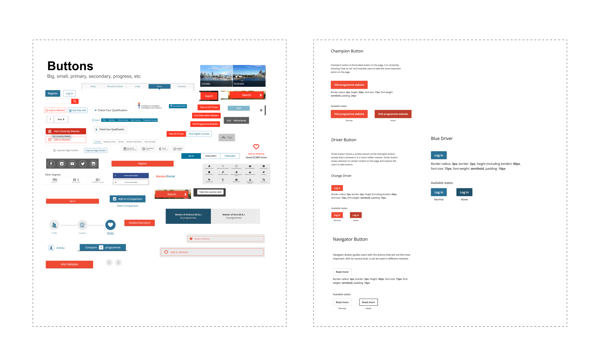
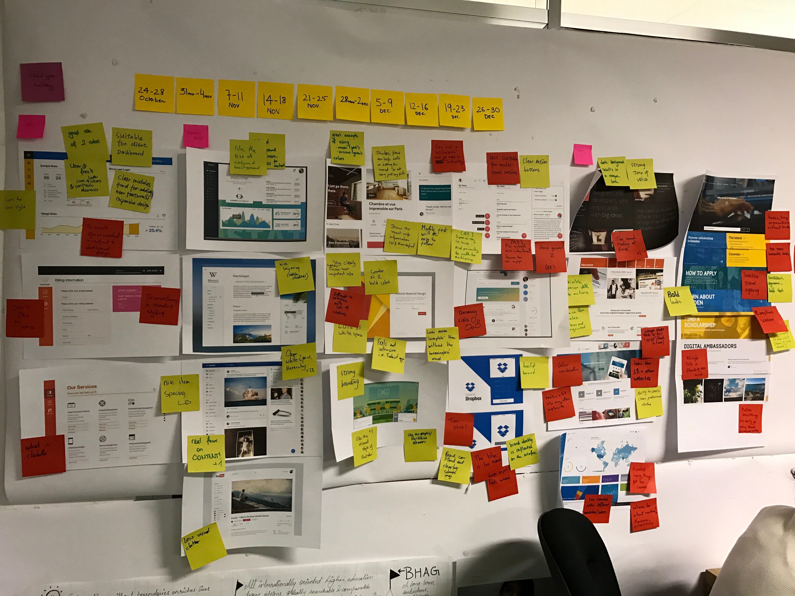
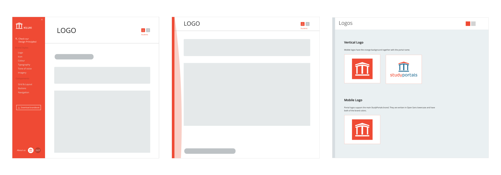
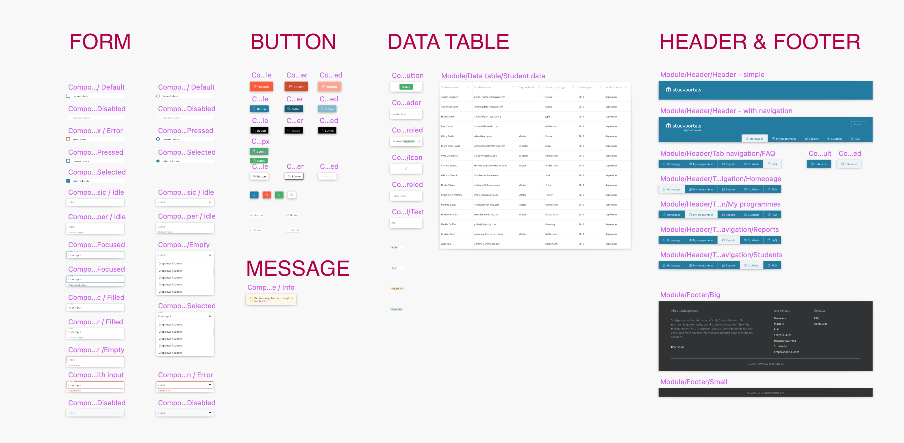
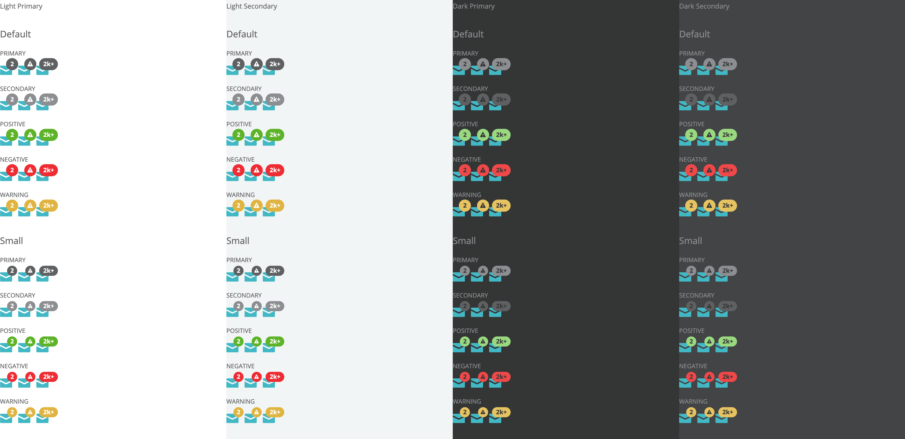

Working with Design Systems
Intro
I have been a fan of Design Systems - while working on differnt type of projects or products, I have always ineivitably found myself working with some form of Design System - small or large, simple or complex. The idea behind a Design System has impacted my design process so much that I can't imagine myself working without it anymore. For people who are less familiar with a Design System, it's a "pattern library" and seems only designers are benefiting from it; However its benefits are much more than that. In my eyes, there are at least 3 great things about Design Systems:
- Maintain brand consistency accross products;
- Ensure consistency of the user experience;
- Improve design & development efficiency via reusability
I have always become part of the "Design System Team" in a design team, working on different aspects of a design system. Through colloboration with other designers and developers, we constantly improve the design system to make it work better for the designers and developers, and eventually, for the products and users it's serving.
Case Studies
1. Set up Studyportals' Design System
Team
2 designers
Context & problem
As the design team is growing in size, Studyportals would like to set up a styleguide that helps to maintain the design consistency accross different sections of its products. I volunteerd with another designer on the team to work on this project. The established website can be viewed at styleguide.studyportals.com.
Process
Components audit & definition
With the help from the design team, We conducted an audit to understand the current usage of the "components" - which have been used (somewhat) consistently accross the platform? Which ones are messy and need to be re-defined?
Based on the results of the audit, we started to create documentation for different components, defining it's style and behaviour. We went through a few design discussions with all the designers on the team to look at these guidelines and iterate based on their feedback.
Below is an exmpale for the button component:
Styleguide website design
We decided to create a single source of truth for the documentation of the components - one that we can easily update & maintain, and easy to access for everyone (e.g. designers, product managers, developers, marketing etc.). A website seems to be a good option for such purpose. After going through many other syleguide websites and discussing about our own needs, we started to create a series of wireframes to capture the ideal style direction and content structure.
 Sketch library
We dreamed of creating a "holy grail" design system, where design library, styleguide and code library all match each other. We started with building the link between the styleguide and design library first by creating reusable symbols in Sketch. This way designers can have a easy toolkit to use during the design process. This is a collaborative work from several designers on the team.
Below is a subset of the design system, a smaller set of symbols created for Studyportals' client-facing products.
Maintain & update
We understand design system is a living system, the only way to make sure that it best serves the products is to make sure it's constantly being maintained and updated. We developed a process to regularly communicate to the product teams around the progress of component development, as well as hearing from the teams about the needs for new components.
We also developed a few tools and templates for designers to request updates and create components themselves (e.g. icons). We designed components and get feedback from designers and developers. We also send out updates to the whole company on the recent additions and changes to the styleguide.
The process was working very well - we have created an engaging process where design system is becoming a crucial part of the product development process.
2. Contribute to IDEXX'SPOT Design System
Team
4 designers, 1 developer
Context
SPOT is IDEXX's Design system, it's a medium-large sized system which contained more than 20 different components. All the components presented in the system have their design symbols created in the Sketch library and their code equivalence. A team of 5 (4 designers and 1 developer) are actively working on maintaining & updateing the system, making sure new components are being designed and developed that suit the design team's needs.
As a member on the team, I am responsible for components creation, documentation and library update. A recent example that I worked on is the badge component.
Process
Design review & feedback session
Badge component can be used to provide additional information on another component, the red notification bubble that's common to see in modern products is an example of a badge. The design team has been consistenly reporting the need for such a component. One designer on the team made the initial design some time ago, and I picked up the work from there and continued with reviewing and refining the current proposal.
I hosted a few workshops with the whole design team to go through current usage and needs for the badge component in various products accross the company. From there we examined from differnt aspects whether the current proposal could work in different contexts and made adjustments and additions.
During these sessions, there has been some confusion from the team around the difference between badge and another component: Pills. We also did a comparison to further make the distinction between the two and clarity the use cases for each.

Documentation & component creation
Based on the input from these discussions, I finalized the design proposal and made a detailed documentation of the badge component, describing it's styles, behaviour, variants and usage guidelines. I worked together with the developer on the team to create badge component both in the Sketch library and in the code base.
We tested the different variants and use cases thoroughly ourselves, before publishing it.
Usage & monitoring
We published the badge component on the SPOT website, together with the design symbols and code equivalence. We encouraged the team to start using the new badge component. Through design discussions, we observe the usage of it and identify how it can be improved to make it easier for people to use via e.g. naming convention, color variants improvements.